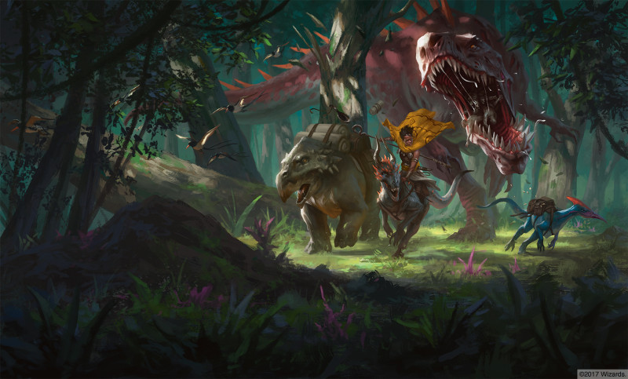

Chult
{kind=link}
Chult
8951 x 12000 (10 Mo)
Chult est une péninsule située au sud de la Mer inviolée, au large de Calimshan. Cette jungle montagneuse abrite des monstres primitifs, d'imposants dinosaures et des marais infestés par les maladies. Des tribus humaines sauvages, de féroces gobelins et d'étranges individus monstrueux hantent ces terres dangereuses. Néanmoins, malgré ces nombreux dangers, Chult attire de nombreux aventuriers en quête de ses richesses légendaires.
Géographie
Les célèbres jungles recouvrent la majorité de l'ouest de la péninsule de Chult. Quelques hautes montagnes parviennent à se dresser au-dessus de la canopée verdoyante, et il existe tout de même de grandes clairières et de vastes prairies marécageuses autour des grands lacs occupant le centre des jungles.
Jungles de Chult
Si un individu écoute attentivement les histoires racontées dans les tavernes à travers tout Faerûn, il est difficile de ne pas croire que les jungles de Chult soient l'endroit le plus dangereux au monde. Chaque buisson ou plante peut se transformer en un monstre étrangleur, venimeux, mangeur de chair ou suceur de sang. Et ces histoires ne sont pas très éloignées de la vérité. La chaleur et l'humidité y sont incroyables et les insectes, qui s'accrochent, piquent et bourdonnent sans discontinuer, y sont légion. Ces jungles sans véritables sentiers abritent d'étranges tribus de nains et de créatures couvertes d'écailles que l'on ne trouve nulle part ailleurs. Les sangsues terrestres, les plantes carnivores et les limaces géantes sont très communes, et chaque serpent semble être armé d'un venin mortel. La maladie est toutefois sans conteste le plus grand assassin de tout Chult. Elle accompagne les plantes et leurs épines douloureuses, les centaines de piqûres d'insectes reçues dans une même journée et même les brumes de la jungle. Les individus qui boivent l'eau de la jungle sans la faire bouillir sont quasi certains d'attraper rapidement une maladie ou un parasite. Sous la canopée, la traversée des jungles profondes est plus aisée mais comporte également des risques. Des fourmis et des araignées géantes, des charognards rampants et des vers pourpres vivent au pied des grands arbres et disparaissent précipitamment dans la perpétuelle obscurité des plantes grimpantes et des champignons où les rayons du soleil n'arrivent jamais. Les sous-bois sont clairsemés et le voyageur vigilant verra très certainement approcher sa mort.
Malgré tout cela, des explorateurs venant de tous les coins de Faerûn pénètrent régulièrement dans les jungles de Chult en quête de ses légendaires filons d'or, de ses gemmes prétendument aussi grosses que le poing d'un homme, de ses plantes exotiques tant appréciées des collectionneurs (des plantes permettant de concocter d'innombrables poisons, parfums et remèdes), de ses bois de construction massif et de ses arbres à gomme. Les richesses de Chult ne sont en aucun cas exagérées. Le Calimshan envoie d'ailleurs un flot constant d'esclaves dans les jungles afin de construire des routes au milieu des lianes et des plantes rampantes toujours présentes et d'accéder aux mines et aux cités en ruine connues. Les esclaves y périssent en très grand nombre et les quelques individus qui sont parvenus à s'enfuir content des histoires hautes en couleurs au sujet d'un complexe de vastes cavernes s'étendant sous les jungles de Chult et hanté par des chauves-souris gigantesques, de cités en ruine saturées d'or, de gemmes et de monstres en maraude, de régions où seules les plantes grimpantes empêchent les édifices de s'effondrer et où d'étranges serpents à six têtes ondulent sur le sol ou volent dans les airs.
Côte sauvage
Cette étendue rocheuse et inhospitalière du littoral sud-ouest de Chult représente un véritable danger pour les navires. Les marins l'évitent à tout prix car les tourbillons, les vents forts et variables, et les monstres aquatiques y sont monnaie courante, tandis que dans les airs des dinosaures affrontent régulièrement des aigles géants pour gagner la maîtrise des cieux. Des individus courageux ou stupides explorent les grottes situées le long de la côte, espérant y découvrir des tunnels conduisant jusqu'aux riches mines s'étendant sous les jungles.
Fort Béluarien
Cet avant-poste appartient au Poing enflammé, une compagnie de mercenaires basée à la Porte de Baldur. La compagnie est composée de rôdeurs, de magiciens, de clercs et d'un grand nombre de guerriers qui proposent leurs services à tout individu ne servant aucun dessein malfaisant. Ils sont régulièrement approvisionnés, connaissent bien la jungle et autorisent même les aventuriers désespérés à passer une nuit au fort s'ils en ressentent réellement le besoin.
Mezro
La cité circulaire de Mezro était autrefois la plus grande zone civilisée de Chult. Un mur magique entourait la cité et empêchait tout individu de la voir depuis l'extérieur, ce qui provoquait même une confusion magique chez ceux qui s'en approchaient trop. Puis cette protection fut levée en 1363 après une bataille victorieuse contre les gobelins batiris. La cité se convertit alors en un refuge sûr pour les explorateurs qui avaient subi la colère de la jungle et en une cité sainte aux yeux des tribus Chultaises. Tout individu violant la loi se voyait tatouer un triangle bleu sur le front puis être exilé. Les immortels baras d'Ubtao, des Élus semblables à des paladins, dirigeaient Mezro et la protégeaient des dangers. Au centre de la ville trônait le temple d'Ubtao et la cité possédait son propre collège de magie. Mais la Magepeste détruit la cité de Mezro, la convertissant de nos jours en un site infesté de morts-vivants et de monstres.
Monts kobolds
Les monts kobolds sont une chaîne de montagnes sur la côte ouest de Chult qui abritent entre autres la mine du clan nain des Wyrmheart, située au sud-est de l'ensemble montagneux et connue pour être riche en diamants et en émeraudes.
Pics enflammés
Les Pics enflammés, lieu de résidence des salamandres et d'autres créatures de feu, surplombent une double-porte en fer qui s'ouvre sur le royaume des morts. Lorsque la fin du monde approchera, Dehdar le Serpent de la Nuit (un monstre terrible se nourrissant des cauchemars oubliés de toutes les créatures) fracassera ces portes et en sortira pour ravager Toril.
Port Nyanzaru
Cette cité portuaire située au nord de la péninsule dans la baie de Chult était une colonie d'Amn, mais depuis neuf ans la ville est indépendante, contrôlée par un consortium de sept riches commerçants appelés les princes marchands. Depuis la destruction de Mezro, c'est la seule ville et l'unique centre de commerce de Chult. Son port a été construit de manière défensive afin d'éloigner les pirates rôdant dans les eaux voisines. On murmure que le maître du port payerait un tribut à un puissant dragon-tortue qui éloignerait en contrepartie tous les autres monstres aquatiques. La société secrète Ytepka, qui se dédie à la protection de Chult, est très active à Port Nyranzaru, contrôlant le chargement et le déchargement de toutes les marchandises des quais. Ils gardent à l'œil tous les visiteurs qui débarquent, surtout ceux soupçonnés d'être magicien ou de porter des objets magiques. Et si un visiteur se dirige vers la jungle, la société envoie des agents aviser les villages environnants.
- Voir la description complète de Port Nyanzaru.
Société
UN PEU D'HISTOIRE
Il y a de cela des millénaires, la divinité Ubtao, un primordial, créa les jungles de Chult et les peupla de créatures. Puis il construisit la ville de Mezro de ses propres mains en -2637 et laissa les sept baras, des immortels, diriger la cité. Une partie de son essence divine, répandue sur terre, donna naissance à plusieurs esprits de la nature, dont l'un d'eux, Eshowdow, attaqua Mezro en -137. Cette créature de l'ombre fut repoussée mais causa de lourdes pertes, et la rumeur veut que Shaar ait depuis absorbé Eshowdow.
Les humains de Chult vivent dans de petits villages tribaux regroupant de dix à quinze familles. Ils se déplacent annuellement lorsque la terre ne peut plus les nourrir. Ils manient des armes ne nécessitant pas beaucoup de métal comme des hachettes, des arcs, des gourdins, des demi-piques, des bolas, des couteaux et des lances. Le fer et l'acier sont bien trop rares pour que les Chultais puissent fabriquer des armures de métal en grande quantité, les guerriers portent donc des armures de peau et de grands boucliers de peau de forme ovale. Bien que les individus possédant un don inné pour la magie soient aussi communs à Chult que partout ailleurs, leurs traditions tribales limitent la pratique de la sorcellerie et de la magie au sein des clans ruraux. Seul un unique lanceur de sorts est autorisé à pratiquer son art au sein d'un clan ou d'un village. Ces ensorceleurs et ces magiciens participent aux cérémonies de chasse et concoctent des potions pour aider les guerriers. Les mages renégats se cachent dans la jungle pour étudier leur magie en secret. Les Chultais se méfient du pouvoir et de la richesse, préférant vivre simplement et échanger leurs biens excédentaires contre des marchandises utiles.
Hormis les humains, de nombreuses autres créatures intelligentes vivent à Chult : des aarakocras, des batiris (gobelins), des nains, des ptérosauriens et des tabaxis (hommes-chats). Les grungs, les géants, les tigres-garous et les yuan-tis sont plus rares. Les indigènes respectent grandement les dinosaures car ils occupent une place particulière dans les mythes locaux ; ils sont même parfois vénérés comme des avatars d'Ubtao.
